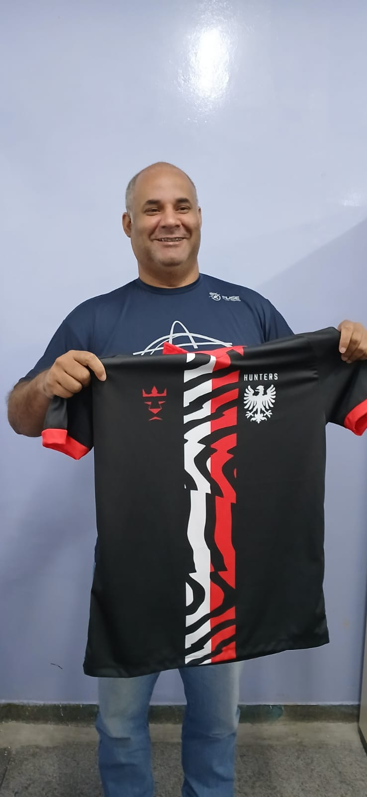
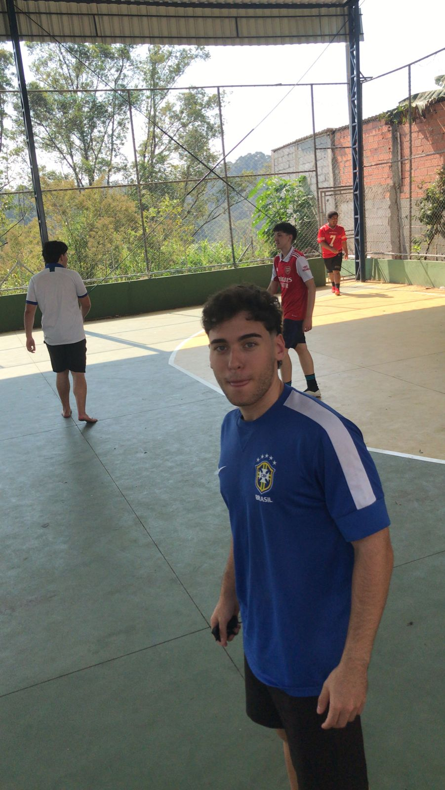
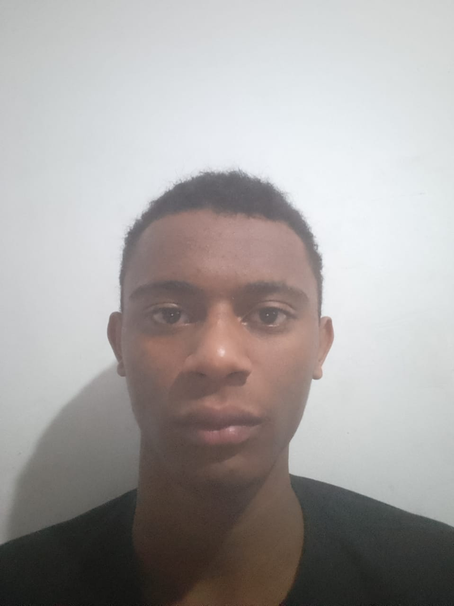

Hunters vence e lidera o campeonato
Com uma vitória sólida por 3x0, a Hunters assume a liderança do campeonato, mostrando força dentro de casa.

Treinador fala sobre os próximos desafios
O treinador da Hunters destacou a importância de manter o foco e a intensidade nos próximos jogos.

Preparação intensa para o clássico
A equipe intensifica os treinos para enfrentar seu maior rival no próximo final de semana.

Novo jogador é contratado
O atleta Kaio fez o teste para entrar no time e passou com êxito, ele estará em campo no próximo sábado.